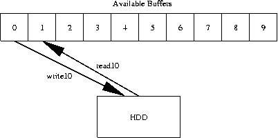

buff compare buff copy buff dump buff fill byte buff fill int buff fill one buff fill patt buff fill rand buff fill seq buff fill string buff fill zero buff format buff get count buff get dsize buff get ri buff get si buff load buff reset buff save buff set count buff set dsize buff set ri buff set si

When referring to a buffer, you have a choice:
bdThis form prints the first 255 bytes of the receive buffer. Here are some other forms:
buff dump recvIn addition to the buffer index, you also have the option of selecting an offset and length. The format is:
bd recv
bd send
buff dump 4
bd 6
buff dump ?index? ?offset? ?length? ?-dw? ?-dd?Here are some examples of using buff dump to view different areas of a large buffer:
bd recv 0x2000 0x200The first instance outputs 512 bytes starting at location 0x2000 in the receive buffer. The second instance outputs 5000 bytes starting at offset 0 from buffer 5. The third instance outputs 255 bytes from the send buffer starting at offset 0x1000. The -dw and -dd flags cause buff dump to group the hex dump into 16 and 32 bit words (respectively). The words are returned in little endian format ("backwards"). These flags are handy when using the serial debugger.
bd 4 0 5000
bd send 0x1000 255
buff format <buffer> <format string> {<offset1> <length1>} ?{<offset2> <length2>}? ?...?The buff format command works very similar to the printf() and scanf() functions in C. Here are some examples:
#show the vendor id of the current driveNote that buff format does not evaluate its index parameters. This means that, if you intend to use variables in the offset and length parameters, you need to use "" in place of {}:
inquiry
buff format recv "%s" {4 28}#find out the # of heads and rotation rate of the drive
mode_sense10 -page_code 4 -alloc 38
buff format recv "# Heads: %u Rotation Rate: %u" {21 1} {36 2}
proc my_hex_dump {buff_id length} {
for {set i 0} {$i < $length} {incr i} {
buff format $buff_id "%X" "$i 1"
}
}
buff load <filename> ?index? ?offset? ?file offset? ?file length?Here are a couple of examples:
buff save <filename> <index> <offset> <length> ?-append?
buff load data.bin sendNote that all data loaded and saved is in raw binary format. If you want to save a dump in ASCII format, TCL makes this simple enough:
buff load dump.bin 4
buff save inqdata.bin recv 0 164
set file [open "out_hex.txt" "w"]
puts $file [buff dump recv]
close $file
The buff fill family of commands are used to generate buffer data.
The types of data that can be put in a buffer currently include:
Each command has its own format although these formats follow a basic pattern. Here is the pattern for buff fill byte:
- One or more copies of a single byte: buff fill byte or bfb
- A 4 byte integer value: buff fill int or bfi
- 0xFF bytes: buff fill one or bfo
- A pattern of bytes that repeats one or more times: buff fill patt or bfp
- Random data: buff fill rand or bfr
- Sequential Data: buff fill seq or bfs
- A Character String: buff fill str or bfstr
- "Zero" bytes: buff fill zero or bfz
Here are some examples of the command in use:
buff fill byte <index> <offset> <length> <byte>
buff fill byte send 0 512 0x01The other commands follow a very similar format. buff fill int is a useful command for lba tagging. buff fill str is useful for time/date tagging. buff fill byte is useful for setting/changing parameters for the mode_select command.
bfb send 8 1 0x77
bfb 4 0x2005 1 0x22
Other buffer abilities include: